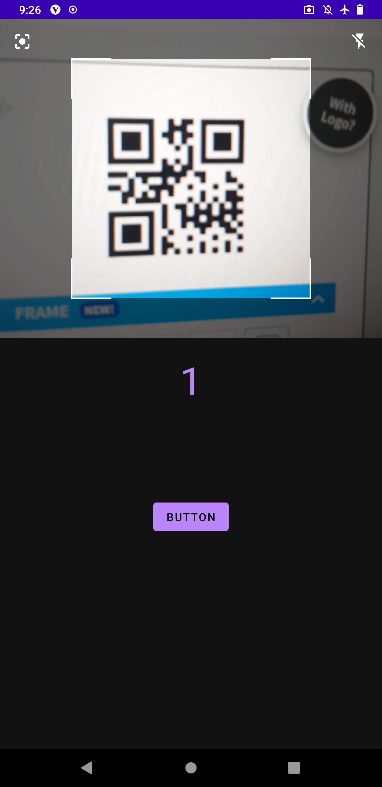
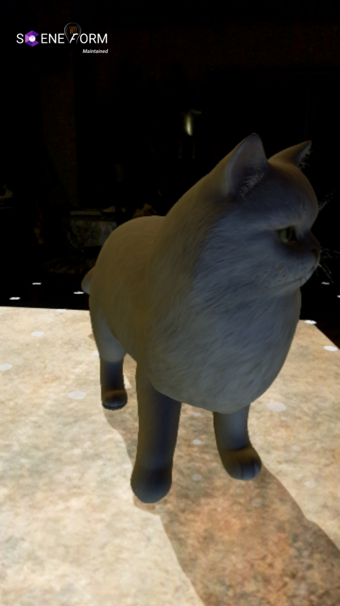
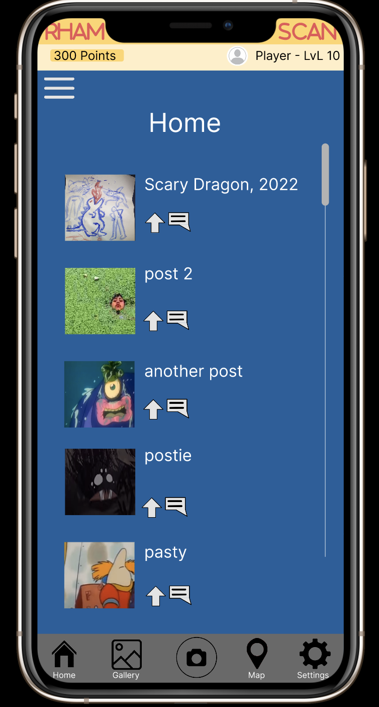

| DELIVERABLE 1 | |
|---|---|
|  | Test 1:Display Text data from QR Code Success Condition:Success Condition: QR Code with data representing the number 1 displays 1 on the phone. Attempt:Successful (See Report for Video) |
| Test 2:Display body text from QR code Success Condition: QR Code when scanned will output the text 'RHAMJET Icon' along with a body text underneath Attempt:Successful (See Report for Video) |
|
| Test 3:Display body text from a different QR code Success Condition: QR Code when scanned will output the text 'RHAMJET Rainbow Ver' along with a body text underneath Attempt:Successful (See Report for Video) |
|
| Test 4:Display an Image with Text from QR Code Success Condition: QR Code when scanned will output the text ' RHAMJET Icon' along with a body text underneath and an image on top of both text Attempt:Successful (See Report for Video) |
|
| Test 5:Display two different sets of information from two QR Codes Success Condition: The software will two QR codes which will contain two different image and text sets and will be successful when it can do it in succession. Attempt:Successful (See Report for Video) |
|
| Summary: The development of the QR code scanner went slowly at first since I didn’t know how to program in Java/ Kotlin; the Android studio user interface did take some time to familiarize. While developing RhamScan I used yuriy-budiyev’s code from GitHub as a dependency where I could use a lot of his methods in our own program. The outcome of this program can be seen in test 2 where the QR code scanner reads a QR code on the monitor and outputs a value. Though setting up the QR code aspect of the application was not really a challenge, it was difficult to continue developing the application from that point as there were no exact tutorials to follow and so I had to freestyle the rest of the development with the limited knowledge I had gained and other tutorials which explain a small portion of the overall goal. The goal was to output different values from an SQL database based on the number the scanner reads. One of the issues was that the QR code was written in Kotlin, and the rest of the program was in Java and so it was difficult to pass values to different activities as the syntax was a bit different between the two. This was resolved through trial and error; I experimented with different pieces of code which could retrieve values from another activity in Java. Finally, I set up an SQL database within the app and could retrieve string data based on which primary key is called. While there is a connection between the app and the database, the next step would be to save images and display on the result activity when it is called by the primary key. |
|
| DELIVERABLE 2 | |
|---|---|
|  | Test 1:Create a sample app and boot it up on a testing environment, such as an emulator or physical phone. Success Condition: Run a Hello World app that displays the text “Hello World” on the phone. Attempt:Successful (See Report for Video) |
| Test 2:Download a sample app that utilises AR camera functions. Success Condition: Run an AR app capable of placing down a default model already present in the app Attempt:Successful (See Report for Video) |
|
| Test 3: Display a Box model by modifying the sample app code with a chosen box as a model. Success Condition: Successfully be able to place down a box model taken from an open-source website on the AR app. Attempt:Successful (See Report for Video) |
|
| Test 4:Display a low poly model by modifying the sample app code with a chosen low poly model. Success Condition:Place down a low poly model of any choice taken from an open-source website on the AR app. Attempt 1: Unsuccessful (Model is too big) Attempt 2: Unsuccessful (Model was not scaled down enough) Attempt 3:Successful (See Report for Video) |
|
| Summary: The functional testing of the AR function initially had a rough start, as developing mobile apps was too difficult for my current skillset and made the initial two tests difficult. As such, I resorted to using the sample apps provided by ARCore and Thomas Gorisse’s GitHub to create the AR component. Despite that, there were too many moving parts within the sample apps for me to have been able to effectively modify, which in turn influenced my testing conditions to be changed from developing an AR app to only being able to display different kinds of models. The ARCore sample app proved difficult to work with, as it relied on .obj files that would convert into .sfb through the Sceneform API. However, as I discover several hours of testing the API to convert my chosen .obj model, I had learnt that Google had shut down its support in 2021, rendering the ARCore sample app impossible to work with. Fortunately, Sceneform was maintained and continued by another individual and thankfully had their own sample app which could be used. This made testing a lot easier additionally, as the mechanism to display model only relied on changing a string to reference a .glb model instead, making it easy to modify on the go. However, one problem I did encounter with that sample app is its seemingly inability to scale down the model on the software side of the application no matter what I tried to do. I settled this issue by asking Elliot to alter the model file itself in Blender and scale it down to a manageable size. Ultimately, the testing proved a success as I was able to get the fundamental AR component working and be able to slot in whatever .glb model I wanted. |
|
| DELIVERABLE 3 | |
|---|---|
|  | Test 1:I will be conducting user testing for this section. Users will go through a scenario of scanning and uploading the artwork. Success Condition: They can comfortably work through all of the relevant screens in the app and get to where they need to go. Outcomes: First user – The user rated their experience of scanning and registering a drawing with 2/4. The user was a bit confused at first on how to operate the app. Mistake on my part, I coached and guided excessively so the feedback isn’t very high quality. The user’s ability to work through the scenario and figure out how to scan and generate an artwork to register, was quite low. The user tried to tap on some icons of which I hadn’t implemented any interactions yet. They seemed to have some difficulty in tapping on some icons. This could be user error, not implementing an adequate clickable area, or not conveying the clickable areas enough. Second user – The user gave a rating of ¾ for this process. The user, given a clear task to scan and register the drawing, was able to get straight through all of the desired tasks. They were a bit unsure of the task initially, but after one run through they were perfectly on track on how to do it. |
| Test 2:Assess the user’s ability to navigate throughout the whole application and how easily they can locate the interactable icons to get to all screens. Success Condition: The user should be able to get through the entire app without a hitch Outcome: First user – The user rated their experience as a 2/4. This test also follows the same mistakes of me coaching too heavily on the process. I didn’t give a clear enough direction for them so at some points they were held up for a bit on deciding what next to do. They were able to navigate around the whole app, with a moderate amount of hiccups. Second user - The user was able to fiddle with the app and get around to every screen. They gave their experience a ¾. They explained that they had no issues with navigating around the app, saying it was easy enough. Observing them showed that was the case, also at some points there were a few moments of uncertainty on where they should click next. They also got stuck up on some inactive icons. |
|
| Test 3:Get the user to rate their user experience with the app Success Condition: It is a comfortable experience, and the colours and layout of the app screens is pleasing and follows design principles and heuristics Outcomes: First User: The user gave a score of ¾. The user thought the design of the app was quite nice. The colour choice was pleasing to the eye and the spacing of different elements provided a good layout to navigate around. Second user: The user also found the design of the app to be adequate. They suggested the idea of having a dark theme. |
|
| Summary: These user testing sessions employed the use of two of Tyler’s friends, who offered their time to help run some tests on the prototype. Admittedly, it is a little too late to conduct user testing of this sorts, nonetheless, the feedback they have provided is invaluable and will allow me to apply this to further improve the layout and functionality of the app. The main issue brought up in the feedback was the layout of the design, as at some points it was confusing on what the user should do next. I believe this idea stems from my lack of direction of implementing the interaction paths. There are also some redundant icons in some screens which should be removed, or moved somewhere else. This would reduce confusion and improve spacing, as the mobile interface is quite limited in what you can fit in. A very interesting idea suggested by a participant was to add a dark theme. This is an excellent idea, as this will allow for inclusivity, in terms of having a less-bright theme for people with sensitive eyes, and in general just giving more freedom of choice for the users. |
|